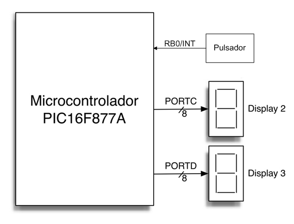
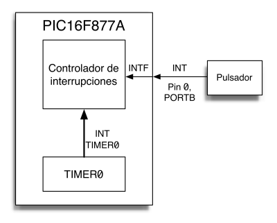
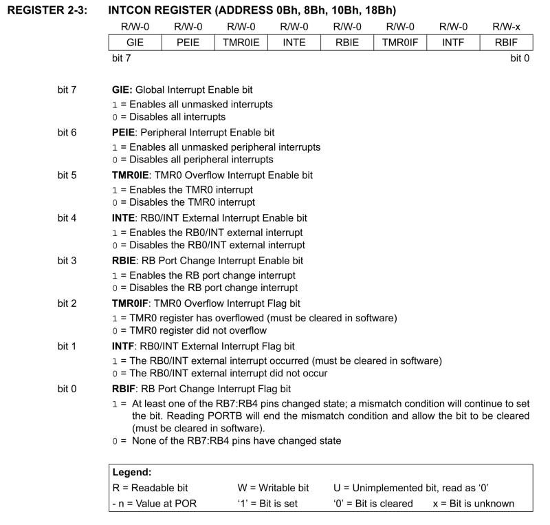
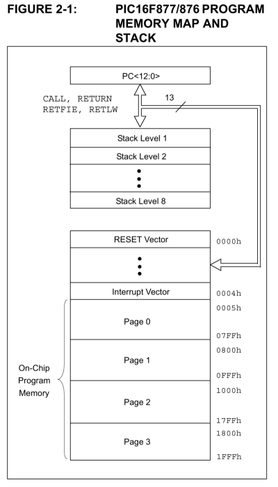
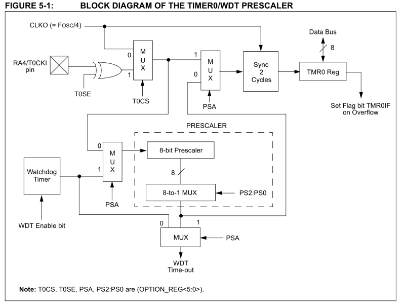
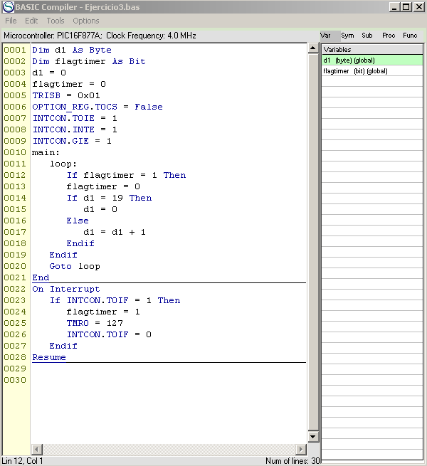

|
Ejercicio 3: Manejo de
interrupciones en cascada
|
 |
1. Objetivo
El objetivo de este ejercicio es que el alumno escriba un driver de
dispositivo, en BASIC, que proporcione al PIC16F877A:
- Un manejador de interrupciones en cascada (daisy-chain), que
permita al sistema hacer coexistir correctamente las interrupciones
procedentes de dos orígenes distintos, el temporizador
TIMER0 y la linea de peticiones de interrupción externa
(RB0/INT), activada manualmente mediante un pulsador.
- Un código de gestión de las acciones
asociadas a las interrupciones que separe las secciones
críticas de tiempo (que irán en el manejador de
interrupciones) de las secciones de temporización no
críticas, que se ejecutarán en el cuerpo
principal del programa.
2. Sistema de test
La configuración del sistema de pruebas simulado a usar en
este ejercicio se muestra en las siguientes figuras:


En este ejercicio existirán dos
periféricos capaces de producir interrupciones en el 16F877A:
- El temporizador TIMER0, que generará
internamente una petición de interrupción cada
vez que su registro contador asociado TMR0 desborde y pase de FFh a 00h.
- Un pulsador externo conectado a la linea RB0/INT, de
idéntica forma a la usada en el Ejercicio 2; la diferencia
con ese ejercicio es que ahora el pulsador generará una
petición de interrupción INT cuando haga aparecer
un flanco de bajada en el bit PORTB.0.
3. Control de interrupciones en el PIC16F877A
Para la gestión de interrupciones, el PIC16F877A posee un
registro de control y estado (llamado INTCON y sito en la
posición 0Bh), que ofrece los siguientes bits de
máscara y estado:

- El flag GIE es la máscara global de
interrupciones del microcontrolador. El BASIC del compilador cruzado
permite referenciar simbólicamente este bit como INTCON.GIE,
de forma que las interrupciones estarán habilitadas cuando
INTCON.GIE = 1.
- El flag TMR0IE es la máscara de interrupciones
individual del temporizador TIMER0, de forma que sus interrupciones
estarán habilitadas cuando INTCON.TMR0IE = 1.
- El flag INTE es la máscara de interrupciones
individual de la linea externa de petición de interrupciones
INT; sus interrupciones estarán habilitadas cuando
INTCON.INTE = 1.
- El flag TMR0IF es un bit de estado que, cuando
está a 1,
indica que hay una petición de interrupción
pendiente de procesar generada desde TIMER0. Este flag debe ser
limpiado desde software (es decir, debe ejecutarse la
instrucción INTCON.TMR0IF = 0), típicamente desde
el manejador de la interrupción.
- El flag INTF es un bit de estado que, cuando
está a 1,
indica que hay una petición de interrupción
pendiente de procesar generada desde la linea INT. Este flag debe ser
limpiado desde software (es decir, ejecutar la instrucción
INTCON.INTF = 0) , típicamente desde el manejador de la
interrupción.

En cuanto a la rutina de servicio de interrupciones, como el
16F877A tiene un único vector de interrupciones, las
interrupciones son autovectorizadas e, independientemente de su origen,
llaman siempre a la rutina de servicio cuya dirección de
inicio está contenida en la posición 0004h de la
memoria de programa. La rutina de servicio debe , por tanto, operar en
modo encadenado, muestreando los bits de petición de
interrupción para determinar el origen de la
petición en curso.
La prioridad de las interrupciones vendrá
determinada, entonces, por el orden de muestreo de los bits (y, en
nuestro caso, consideraremos más prioritario la del
temporizador TIMER0).
4. Descripción del temporizador TIMER0
El Microchip PIC16F877A contiene tres temporizadores internos (TIMER0,
TIMER1, TIMER2), de los que el más usado es el TIMER0, cuyo
esquema de bloques se muestra en la figura.

Las características relevantes, para nuestra
práctica, de este temporizador son:
- Posee un registro contador de 8 bits, TMR0, cuyo valor es
incrementado periódicamente en 1 cada ciclo de
instrucción, y que va tomando progresivamente todos los
valores entre 00h y FFh. Cuando el contador alcanza FFh y desborda,
vuelve a 00h y genera una interrupción, indicada por el flag
INTCON.TMR0IF.
- TMR0 puede ser escrito desde software, por lo que puede ser
precargado con un valor distinto de 00h para modificar el tiempo que
pasa entre dos interrupciones.
- Aunque el micro simulado sólo opera con su reloj
interno, el microcontrolador real puede usar un oscilador externo,
conectado a la linea RA4/TOCKI, como señal de reloj de
TIMER0; por ello será necesario, en nuestro
código, poner a 0 el flag TOCS del registro OPTION_REG para
indicar que se usará el oscilador interno.
5. Manejador de interrupciones en BASIC
El compilador cruzado BASIC del simulador proporciona un mecanismo
sencillo de gestión de las interrupciones.

Como se observa en la figura, el manejador de interrupciones es un segmento de código caracterizado por:
- Debe ir precedido por el resto del programa. El programa debe terminar con una linea End, para delimitarlo con precisión.
- El manejador comienza con la sentencia On Interrupt, y termina con la sentencia Resume.
El compilador cruzado BASIC, al identificar el manejador de
interrupciones, genera el código máquina de nuestra
rutina de manejador precedido por código que salva el contexto
mínimo necesario (PC y flags de estado), y finalizado con la
instrucción IRET de retorno de rutina de interrupción.
6. Programa ejemplo
El alumno partirá de este código ejemplo
proporcionado, que muestra cómo usar la interrupción del
temporizador TIMER0 para incrementar periódicamente el valor de
la variable d1 y contar con ella hasta 20, de forma repetida. En este
código se observa claramente cómo la gestión de la
interrupción está dividida en dos partes:
- En el manejador de interrupción (On Interrupt)
se comprueba el flag de petición de interrupción del
temporizador, T0IF, y se indica con una variable software (flagtimer)
la necesidad de incrementar el valor de d1, pero no se realiza este incremento. Seguidamente
el manejador vuelve a progamar el intervalo de temporización
(cargando TMR0 con un 127) y resetea el flag T0IF. De esta forma se
minimiza el tiempo invertido en ejecutar el manejador, y evitamos el
riesgo de una interrupción autointerrumpida.
- En el cuerpo del programa se usa el valor de la variable
flagtimer para determinar si se debe incrementar el valor de d1; de
esta forma la parte más larga del procesamiento de la
interrupción se realiza en una zona de código no
crítico.
7. Práctica a realizar
Partiendo del código ejemplo proporcionado, se pide al alumno que desarrolle un manejador de interrupciones en cascada (daisy-chain) y extienda la funcionalidad del programa, de forma que realice lo siguiente:
- En dos displays de 7 segmentos, controlados a través de
los puertos PORTC y PORTD, representar el valor hexadecimal de la
variable d1.
- Habilitar la interrupción INT, generada con el pulsador
conectado a la linea RB0/INT, y usarla como un botón de
marcha/paro de la cuenta, de forma que:
- si el contador está andando, al pulsar el botón
la cuenta se pare (deshabilitando la interrupción de TIMER0).
- si el contador está parado, la pulsación vuelva
a poner en marcha la cuenta (volviendo a habilitar la
interrupción del temporizador e inicializando el valor de
TMR0).